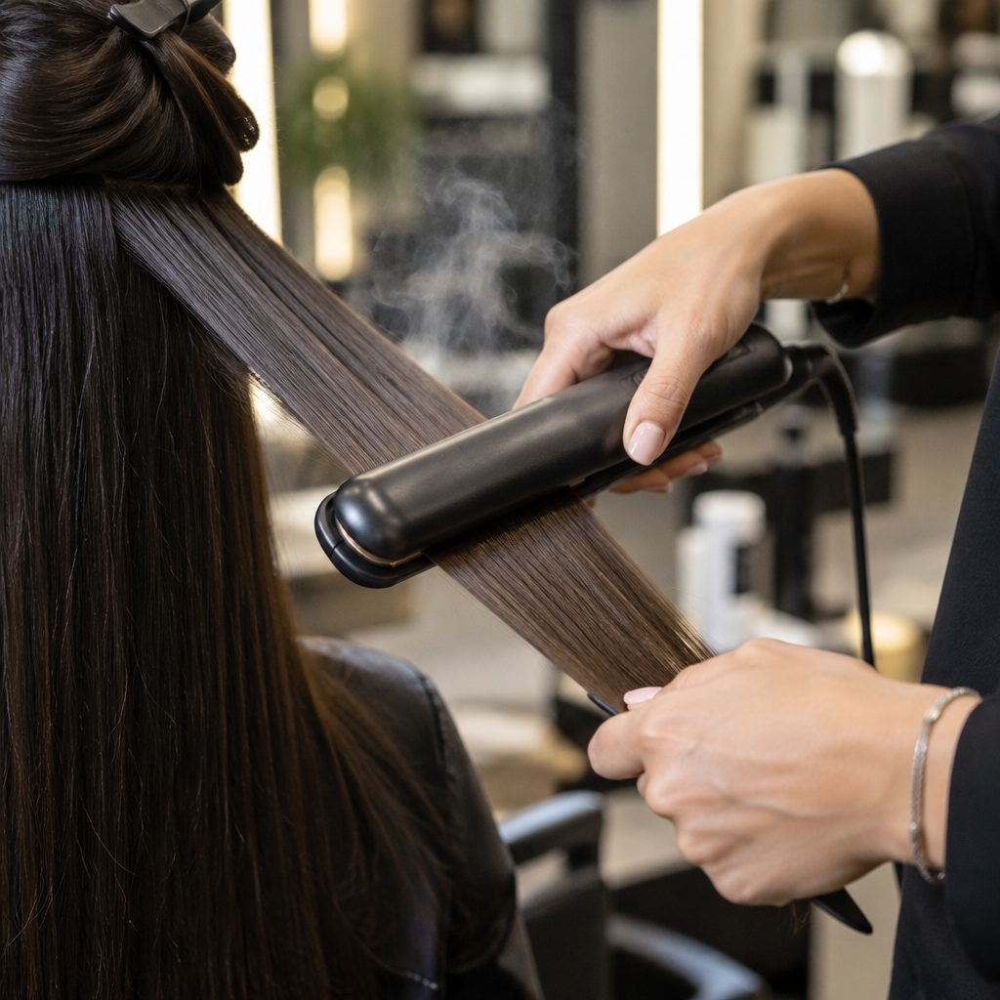
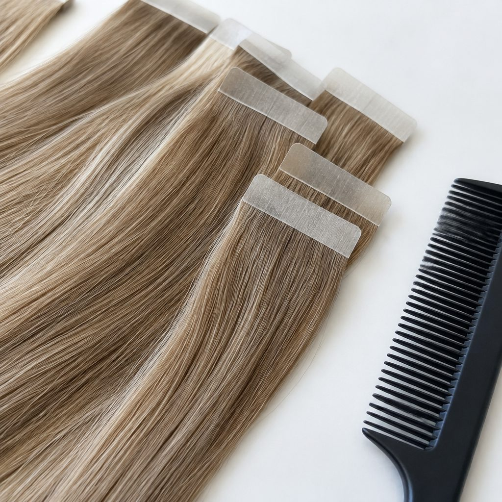
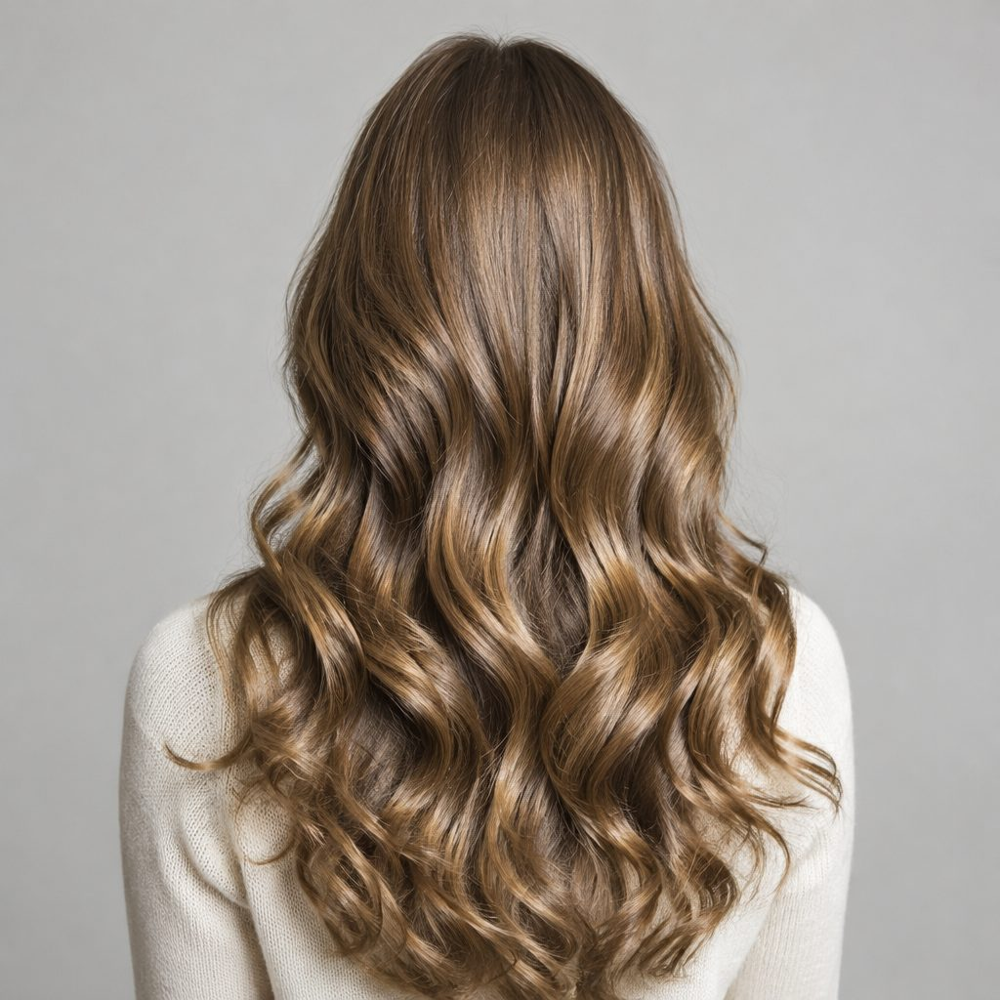
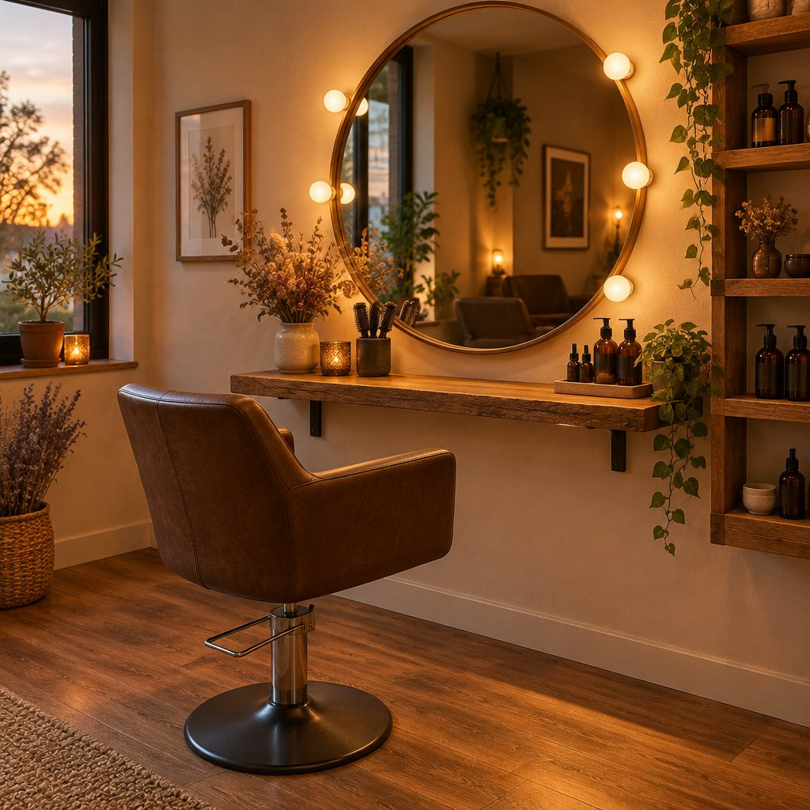

Пушатся и живут своей жизнью
Кератин или холодная реконструкция: волос становится гладким и перестаёт реагировать на влажность. Укладка — по желанию, а не по необходимости.
Кератин, ботокс и холодная реконструкция: волосы гладкие без укладки каждый день. Сначала смотрю ваш волос и говорю, что ему действительно нужно, а что — нет. Опыт 5+ лет, материалы мировых брендов, гарантия срока носки.

Кератин или холодная реконструкция: волос становится гладким и перестаёт реагировать на влажность. Укладка — по желанию, а не по необходимости.
Восстановление и аминоботопластика: возвращаем плотность и блеск изнутри, а не «заливаем» силиконом сверху.
Прикорневой объём держится не один день: не нужно каждое утро сушить волосы вниз головой и заливать лаком.
Наращивание биолентами: своя длина цела, крепление не видно, ходить можно месяцами с коррекцией.
Биозавивка и окудрение: локон держит форму без плойки, пены и лака.
Пилинг кожи головы: чистим поры, убираем плёнку от уходов, и объём у корней становится настоящим.
Одиннадцать процедур — от выпрямления до наращивания. Не назначаю «модное»: сначала смотрю состояние волоса и кожи головы, потом предлагаю то, что даст результат.

Гладкость на 3–6 месяцев, волос не пушится от влажности и укладывается за пять минут.

Плотность и блеск, убирает пушистость без эффекта «прилизанных» волос.

Восстановление без горячей обработки: для осветлённых и ослабленных волос.

Чистые поры, свежесть у корней, уходы начинают работать, а не лежать плёнкой.

Длина и густота за один визит, крепление не ощущается и не видно.

Локон держит форму без плойки: мягкая волна или крупный завиток на месяцы.
Скидка действует на любую процедуру. Скажите, что пришли по сайту, когда будете записываться.
Если процедура «встала» не так, как договаривались, — исправляю сама. Срок носки обсуждаем до начала работы.
Не экономлю на составе: работаю на профессиональных материалах, а не на «чем подешевле».
Много обучений у мировых технологов: делаю по протоколу, а не «как получится».
За это время прошла через разные волосы: тонкие, осветлённые, жёсткие, восстановленные после чужих ошибок.
Если волосу сейчас нельзя кератин — скажу это прямо и предложу то, что не навредит.
Район ЖД и автовокзала: удобно заехать по пути, без поездок на окраину.
Пишете в Instagram или звоните. Спрашиваю про волосы, окрашивание и что не устраивает.
Смотрю волос и кожу головы, проверяю, что можно делать сейчас. Называю цену до начала.
Работаю по протоколу бренда. Время зависит от длины и густоты — предупреждаю заранее.
Показываю, как мыть и укладывать дома. Отвечаю на вопросы в переписке после визита.

Напишите или позвоните: задам пару вопросов про волосы и скажу, какая процедура даст результат, а какая подождёт. Консультация бесплатная.